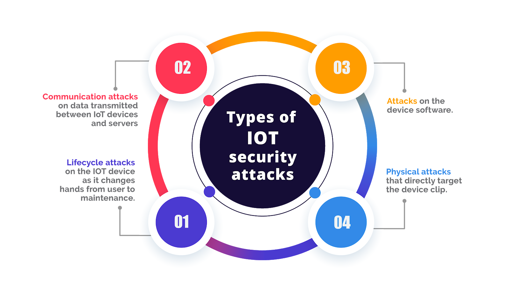

Introduction to IoT and Smart Homes
According to Amazon Web Services, the Internet of Things (IoTs) is the collective network of connected devices and the technology that facilitates communication between devices and the cloud and between the devices themselves. This website will provide details on IoTs and their applications in daily life. As seen in futuristic movies, smart homes have always been the center of attention due to their sleek and high-tech appearance. From motion sensors to voice-enabled speakers to refrigerators with built-in monitors, devices are interconnected, creating the IoT network.

What are Smart Homes?
A Smart Home refers to a residence operated with the support of several interconnected technology devices, often based on the preferences of the residence owner. A great example of a smart home is the LG ThinQ Application, which includes all of its flagship products that can be connected to the home internet. Then, it can be controlled through a click away on your mobile device. Not only does it bring us convenience, it is also a way to improve the energy efficiency and security of the housing ecosystem.

Risks of IoT
IoT is everywhere, and we sometimes don’t even notice them. With convenience comes risks, and IoT devices are prone to being more suspected in terms of security. No fine line or regulation advises how IoT stores user data or encrypts it to prevent leaks.
